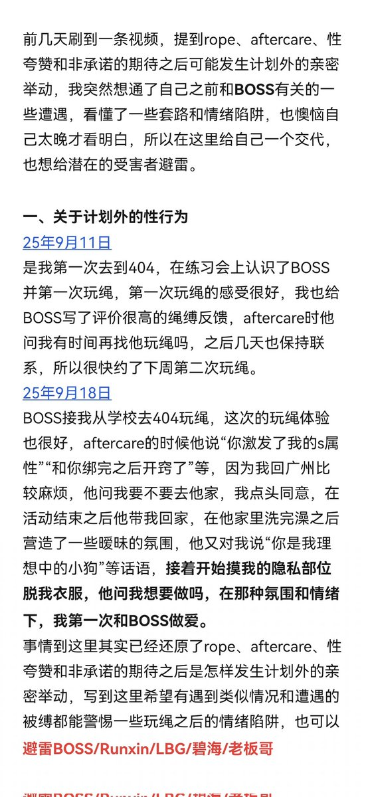
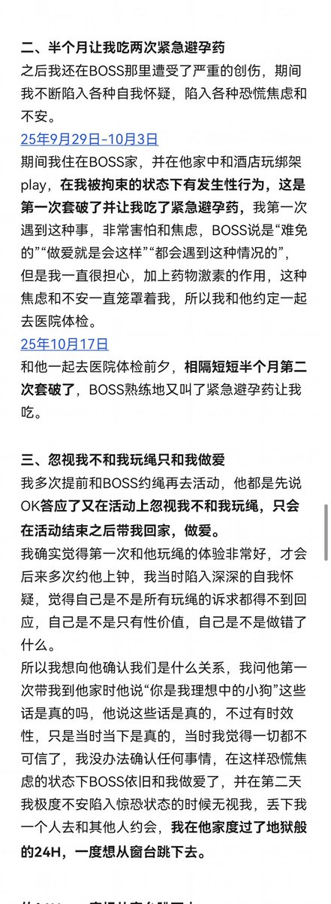
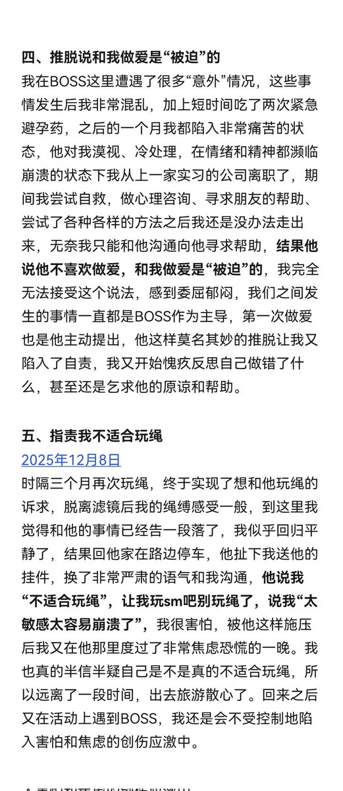
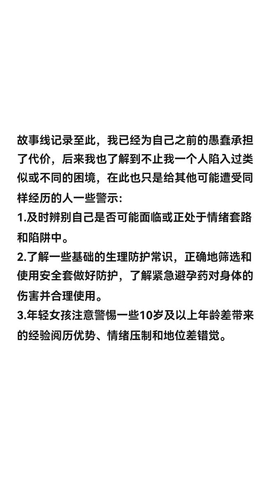

時璃風医詩🌈🏳️🌈
@hagishigure
#Metoo 拒绝正当化性侵犯。




KK睡得好吗
@kkrrssy
一条关于BOSS的避雷，男缚手，活跃于广深、天津、厦门、长沙等地@LBG1323330
极速版：第二次玩绳后发生计划外的性行为，半个月让我吃两次紧急避孕药，承受心理和身体的伤害，之后忽视我不和我玩绳只和我做爱，还推脱说和我做爱是“被迫”的，指责我不适合玩绳，导致我反复陷入自我怀疑和焦虑恐慌的创伤中 https://t.co/1ryViUZe9q